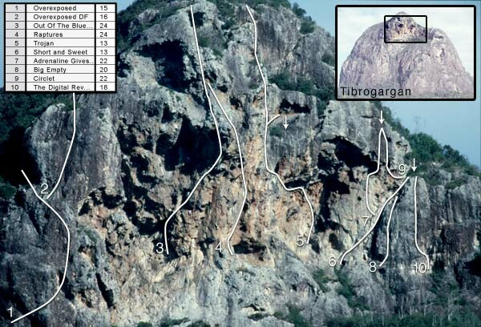

Home > The Guide > Mt Tibrogargan > Upper Routes, Mt Tibrogargan
|
Home > The Guide > Mt Tibrogargan > Upper Routes, Mt Tibrogargan |
|
The following routes do not start on ground level; instead, they begin high up on the E face. They are listed from L to R.

Overexposed 120m 15
Start: About 10m below the extreme top of the gully above Carborundum Chimney.
The climb goes up the steep black wall L of the Tibro's E summit overhang with good technical moves and plenty of exposure with great stances in the small caves.
1) 33m (crux) A hard start up the steep wall, then R into a small gully. Bear R again over easy ground to the foot of a wall and PR. Up and to the R over thin holds, very delicately, towards the top R corner of the wall. Easier towards an overhang. Over the overhang and into a small cave.
2) 20m Out of the cave on the R, then step around the corner onto the very exposed wall. Straight up, then tend R towards another small cave (the one on the L). Good holds but exposed.
3) 17m A difficult move out of the cave, moving up under the roof of the cave on the L out onto a point. On top of the cave easier ground, then traverse R above cave and around the corner and up to yet another small cave.
4) 17m A difficult groove in the roof of the cave. Wide bridging here with easier climbing above into cave stance once more.
5) 33m Out of the cave on the L, up a rib which is a bit loose, L below a loose block to easier climbing, traversing L. The stance is found below a black wall. Traverse off L along an easy ledge and up through bush and mank to summit.
Les Wood, Donn Groom 30/07/1966
Overexposed DF - 16
From the top of pitch 5 on Overexposed climb black wall and slab above with no protection to top.
John Oddie, Rick White 13/09/1970
Out Of The Blue And Into The Black 80m 24
This route climbs the impressive overhang situated at the top of Tibro's E face. The start is marked by an archaic bolt at the base of a horizontal crack. This route was originally done in five pitches with the first and second split
1) (22) Climb R-ward across the horizontal crack with good pro to a crux transition move from horizontal to vertical around an angular block to get established at an awkward stance (optional belay), then up the vertical finger-crack to belay stance.
2) 15m (crux) This pitch traverses R with little pro. To make things safer, place a high runner 5m above pitch two's belay. The pitch moves R-ward from the belay and heads for the hanging ear of rock 15m away. Stay under the ridge of overhung rock and place a runner (#2 SLCD with long sling so the second can practice the crux before unclipping) in the only obvious placement about halfway along the traverse. Do not trust the knifeblade in the ear. Thread the pierced ear with a long sling (about 7m or so!). Technically this 15m section is only 22 but it gets two grades extra because you are in unprecedentedly scary country. Up the corner formed by the ear with SLCDs for the roof & small RP's for the corner. Steep, technical and wild climbing. You can traverse off and up to safety or do pitch 3.
3) (23) Crack climb up the overhung bowl to the summit.
Rick White, Marty Beare, Dave Moss 1980
Start: In the obvious corner 15m R of Out Of The Blue And Into The Black.
"One of the most serious routes in Australia, I thought I was going to die for sure" - Kim Carrigan. On the crux pitch, Kim was out 10m from a #0 RP.
1) 30m Up the corner on great rock to natural belay stance.
2) 30m Traverse L along lip of overhang to top.
Kim Carrigan, Paul Hoskins 1980s
Start: At the top L of The Scrub and is marked ‘T’.
A stunning classic through some very imposing country. With retrobolts removed by concerned climbers, this is now restored to its original glory as a bold route, the way it was originally done in the 60s. Note that the first ascentionists climbed the route wearing sand shoes!
1) 14m (crux) Step out L from belay and climb confidently on slick orange rock passing some thought-provoking placements. Runout in top section. A selection of SLCDs including #4 or 5 are useful at top belay.
2) 14m Another bold pitch. Walk L across ledge for about 10m and then about 4m of vertical climbing (#0.5 SLCD in slot) up into cave. There is a single FH with ring in the cave for the belay, but you may wish to step out of the cave (exposure!) and set a better anchor in the third pitch crack.
3) 15m Step out of cave and climb finger-crack/corner to ledge. Dizzying exposure, secure jams, great rock and bomber pro. The best pitch of the route. Optional chains exist on far R of ledge (two 50m ropes) which provide an escape via one of the best free-hanging abseils in Queensland.
4) 15m Climb the crack-corner to ledge.
5) 15m Avoid the chimney and instead climb the sweet crack up the slab to the L. To finish, simply scramble up the vegetated scree to the top of the mountain.
Les Wood, John Tillack 12/03/1966
Start: This climb takes the obvious R-leading corner crack about 20m R of Trojan. Marked ‘S’.
Atmospheric climbing up a polished R-tending groove. Protection on the route is quite technical to place, and is sparse at the start (crux) so be careful not to slip off. Bring some big gear for the upper crack. Belay off tree at top. A doubled 50m rope will get you back to the ground from the tree. You are actually rapping straight down The Digital Revolution.
Les Wood, Ted Cais 16/07/1966
Start: At Short And Sweet.
1) 27m (22) Up S&S for 20m to big rest where you can traverse L onto slick orange wall (FH). Crux past this on polished marble to second FH, then up to belay in back of cave on natural gear.
2) 13m (22) Belay-gripping exposure. Out R side of cave roof past three FH’s on outrageous overhanging rock using pockets and slopers. Finish up awesome slab on perfect little edges past a final FH to double rings. Rap off.
Neil Monteith, Marten Blumen 13/03/1998
Big Empty 30m 20
Start: At line of four BR’s up wall just R of Short And Sweet.
This is technical slabby weirdness on great rock. Bring some medium SLCDs to protect the upper half. Belay as for tree on S&S. This pitch can be linked with Adrenaline or Circlet to give a sustained outing.
Neil Monteith, Gareth Llewellin 26/03/2000
16m 22
Very exposed steep thugging on the wall right of Adrenaline’s second pitch. Starts at the top of Short And Sweet and traverse L a few moves then up and around the arête to a small cave. Now blast up the slopers to finish at A’s anchor. Three ringbolts and two FH’s.
Neil Monteith, Gareth Llewellin 26/03/2000
The Digital Revolution 28m 18
Start: 10m R of Short And Sweet
L wall of small cul-de-sac past FH to stance. Slab (a few wires and SLCDs - poor pro) to TB. The last 10m are groundfall country!
Neil Monteith, Marten Blumen 30/06/1996
Kronos 23m 11
Start: You must ascend a slab (grade 2) to get to the start, which is on a dirt ledge near a very small cave.
Up R (past mouth of cave) then L into short water-worn chimney. Chimney and bridge up this to a slabby finish up the NE shoulder.
Dennis Stocks, Barry Collier 19/07/1966
Jupiter 40m 13
Start: At the base of the third groove L of the Caves Route chimney and climb up the slab to a stance.
1) 21m Up the groove and out to the R onto a ledge.
2) 18m (crux) Up the groove directly above the first pitch, then climb up the wall R of the smooth groove and up to ledge. Up L to the NE shoulder.
Shane & Col Smithies 27/09/1985
Juno 30m 13
Start: At the base of the second groove L of the Caves Route chimney.
Up the groove to a ledge. Continue up the groove to another ledge, then up twin grooves. From this point, out L onto a slab and then up to the NE shoulder.
Col & Shane Smithies 27/09/1985
Hercules 30m 9
Start: Below the first groove L of the Caves Route chimney where The Scrub track meets the slab.
Up the slab for 13m and into the groove. Up the groove and into a gully, then out on to the NE shoulder.
Col Smithies 10/05/1985
The following two routes start in Cave 3. Best accessed via the Caves Route.
Super Directissima 23m 12
Start: At far R side of Cave 3. Marked ‘SD’.
Boldly step R out onto face. Directly up, keeping R of bulge. Minimal protection.
Paul Caffyn, Mike & Chris Meadows 06/01/1968
Start: At R-hand base of Cave 3.
Not bad fun. Climb down and around to a wide dirt ledge. Traverse R, down a big step, then follow this ledge which slopes diagonally upwards and then diagonally downwards and move around into Cave 4. When returning, don’t start too high. Keep low.
Bert Salmon, Lyell Vidler 1926
The following routes start in Cave 4. Most easily accessed via the Caves Route to Cave 3, then doing the Traverse To Cave 4 as described above.
Prometheus II Traverse 60m 8
Start: Start at upper R side of Cave 4. Marked ‘PII’.
1) 30m Traverse R along a ledge and around across a small section of slab. Up easy slab and up to a vertical crack (but don’t climb it).
2) 30m (crux) Traverse diagonally L, up a little, then enjoy the exposure as you continue traversing around the corner. Follow the ledge to an area below Cave 5.
Unknown
Prometheus II 45m 8
Start: At upper R side of Cave 4, but higher than the previous route, up on top of small buttress. Marked ‘PII’.
1) 20m Traverse R to a broken wall and up to the vertical crack (same crack as for PII Trav.).
2) 23m (crux) Traverse L (as for PII Trav.) for 10m, then straight up to the area below Cave 5.
Bill Peascod, Neill Lamb, Julie Henry 13/05/1956
Prometheus II VF 20m 11
Start: At PII.
Climb as for PII to the vertical crack. Traverse diagonally L for 7m, then directly up.
Unknown
Prometheus III 13m 13
Start: At PII.
Hard for the grade with virtually no protection. Climb as for PII to the vertical crack. Traverse diagonally L for about 4m, then directly up.
Sid Tanner, Andrew Spiers 24/07/1969
Prometheus II DF 20m 18
Start: At PII.
Climb as for PII to the vertical crack, but this time, climb the crack direct.
Unknown